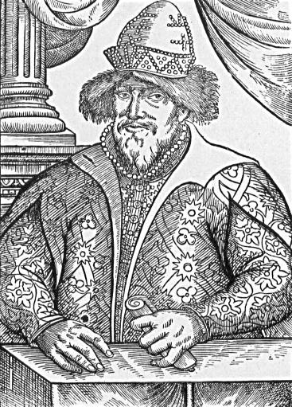

Warrax
Государь Всея Руси
|
Помните: позиция есть только у охотника, у дичи ее нет. Станислав Ежи Лец |
Мы вступаем в достаточно хорошо документированную область русской истории. Конечно, это не означает, что все документы содержат правду — история не раз переписывалась и правилась. Даже о событиях недавней Великой Отечественной, живые свидетели которой еще имеются, создано множество легенд и мифов — от всем известного холокоста до книг Суворова-Резуна. К реконструкции исторических событий надо подходить вдумчиво и аккуратно, не доверяя слепо документам, а воссоздавая систему событий того времени и проверяя все данные на соответствие таковой.
Впрочем, это — прописная истина, и я обратил на это внимание именно в связи со сменой направленности статей: от обобщенного прошлого к конкретным событиям и персоналиям. Конечно, в истории Руси имеется множество выдающихся исторических личностей, но эта работа — не историческая монография, а публицистическое изложение темы «что есть русские как нация», причем столь обширную тему можно раскрыть лишь системно, комплексно; невозможно просто перечислить некий «список характеристик и достаточных условий».
Первой темой исторической части я решил взять личность Ивана IV. Во-первых, именно Иван Грозный de facto был первым русским царем. Как я отмечал в предыдущих статьях, для России с ее большими территориями очень важна государственность — на самотёк пускать ничего попросту нельзя, развалится (в современности смотрим на примеры развала СССР или, если взять масштаб помельче, выборы губернаторов на местах). Именно Иван IV создал из разрозненных княжеств единое государство.
Во-вторых, Иван Грозный описывается в исторических трудах разных авторов очень по-разному, но тенденция типа «садист-убийца» прослеживается явно. Здесь интересно рассмотреть вопрос ангажированности такого мнения — и особенно причины такой трактовки.
В начале ХIХ в. историк Н.М. Карамзин в своем классическом труде «История государства Российского» создал зловещий образ Ивана Грозного, который затем использовался Лермонтовым, Толстым, Репиным, Васнецовым и др., в результате чего стал восприниматься в роли канонического.
Задолго до Карамзина А. Курбский в своем сочинении «История о великом князе Московском», а также в переписке с Иваном IV, создает концепцию «двух Иванов»: в первое время правления — это царь добрый, который потом «грех ради наших сопротивным обретеся». Рубеж между «плохим» и «хорошим» временем правления — разрыв с Избранной радой и начало опричнины. Курбский не одобряет разрыв с боярством и введение опричнины, резко разграничивает эти два периода, видя в первом только хорошее, а во втором только плохое. Однако необходимо учитывать, что Курбский, будучи другом детства царя, затем предал его в апреле 1564, перейдя на службу к врагам (причем принимал участие в военных походах против России), так что его сочинения никак нельзя назвать объективными.
Концепция Курбского была принята в качестве официальной в XVII веке, когда на престол в 1613 году взошел первый царь из династии Романовых — Михаил Федорович. В 1617 г. был написан «Хронограф», в котором описывалось начало царствования Ивана, а далее сообщалось, что после смерти его первой жены Анастасии «буйный вихрь» внезапно переменил «добрый нрав царя», и начались жестокости.
У Карамзина концепция «двух Иванов» прослеживается особенно четко. Обладая литературным талантом, он создал для читателей очень яркое и образное представление о времени Ивана IV, оценивая его как «героя добродетели в юности, неистового кровопийцы в летах мужества и старости». Впрочем, как историк Карамзин был честен: осуждая репрессии в моральном плане, он одновременно подчеркивал, что укрепление самодержавия было спасительно для России.
В середине XIX века в исторической науке России появляется так называемая «государственная школа», виднейшим представителем которой стал С.М. Соловьёв. Историки стали не столько обращать внимание на красочное описание событий и явлений, сколько стремились вскрыть их причины, следствия, взаимосвязь, познать объективный ход истории. С.М. Соловьев рассматривал историю как процесс постепенного вытеснения старых родовых начал государственными. Поэтому, несмотря на все жестокости Ивана IV, он считал, что его деятельность была шагом вперед, к победе государственных начал. Но он не забывал и о морали и писал, что «не произнесет историк слова оправдания такому человеку».
Учеником С.М. Соловьёва был другой выдающийся русский историк — В.О. Ключевский. Он почти целиком отрицает положительное значение царствования Ивана IV, отказывается видеть в нем государственного деятеля и объясняет его деятельность исключительно характером, нравственной неровностью и т.д.
В дальнейшем советские историки придерживались идеологической концепции «Иван Грозный был против бояр-буржуев-реакционеров». Я, конечно, слегка утрирую, но идеологическая направленность была очевидна: государственность против отсталости феодализма.
В современной России, в которой насаждается либерализм и «права общечеловека», оценка Грозного опять качнулась в сторону «деспота-людоеда». Причем на этот раз трактовка идет не от ученых (скажем, работы Нефедова С.А. и Скрынникова Р.Г очень профессиональны, я ими широко пользовался при написании статьи; пользуясь случаем, выражаю историкам свою благодарность), а от ставших модными «ревизионистов». По стопам Фоменко и Резуна двинулись их подражатели... Процитирую характерный отрывок:
«И второй провал: нигде не упоминается, что движение армии великого князя московского сопровождалось просто фантастическими зверствами, включая младенцев, вырванных из чрева матерей, изнасилованных до смерти, сожженных живьем в монастырях и храмах, посаженных на кол и четвертованных (список можно продолжить, читая древние хроники или сочинения Гоголя).
Впрочем, история Ивана IV и его эпохи — это какой-то сплошной провал. К счастью, позади времена, когда ЦК ВКП(б) принимал специальное постановление, как НАДО видеть эту эпоху прогрессивной. «Прогрессивная» опричнина, тупое сопротивление «реакционных» бояр.
Психически нормальному человеку трудно понять, как можно пировать под крики людей, пожираемых в яме специально прикормленным человечиной медведем-людоедом.
А где рассказано о том, что Иван Грозный ни разу не вышел на поле боя? Что он менялся в лице и дрожал при малейшей опасности?
Многие книги иностранцев про путешествия на Русь, написанные еще в XVII-XVIII веках, или не переведены до сих пор, или изданы мизерными тиражами. Чтобы вроде и издать, и чтобы широкому кругу не было известно, что написано. А то ведь неизвестно еще, к каким выводам может прийти читатель.
Книга же Иоганна Гмелина «Путешествие по Сибири с 1733 по 1743 год» не переведена до сих пор.
В этой книге автор, видите ли, «сделал резкие и необоснованные выпады против населения России». Книгу эту я читал, и уверяю вас, никакой напраслины Иоганн Гмелин не возвел. Писал правду: о продажности чиновников, о незнании людьми иностранных языков, о банях, где моются вместе мужчины и женщины, и т.д. Никто никогда, кстати, и не пытался опровергать всех этих «клеветнических измышлений»: да и какой смысл опровергать святую правду?
А. М. Буровский,
кандидат исторических наук,
доктор философских наук, профессор,
председатель Красноярского отделения Международной академии ноосферы,
член Санкт Петербургского Союза ученых,
член Проблемного совета при Академии образования
Цитата из вступления к книге «Александр Бушков, Андрей Буровский. Россия, которой не было – 2. Русская Атлантида»: Издательства: Бонус, Олма Пресс; Серия: Досье; 2001
Сразу видно, кто пишет подобное. «Международные академии ноосферы» и прочие РАЕН — это, извините, диагноз. Как и подпись со всеми титулами для солидности. Показателен метод «взять навозную муху и сделать из нее слона». Что, продажны чиновники только в России того времени? В любой стране, кроме России, обыватели знают несколько иностранных языков? Увольте — в современности на «цивилизованном западе» развелось столько мигрантов, что они языка страны проживания не знают (и не желают учить). А уж претензия к баням (кстати, личным, т.к. общественная баня в деревне в то время — это не смешно) — это да. Куда лучше благочестиво не мыться, не так ли?
Бани почему-то Буровский особенно ненавидит, цитирую оттуда же: «В усадьбе человека, который называет себя христианином, остается строение, не освященное церковью. Строение, в котором не полагается держать икон; строение, в котором может поселиться кто угодно». (Похоже, господин Буровский пытается учить благочестию наших предков… )
Читать всё это, конечно, противно. Зато наглядно видно, на каком уровне ведется современная пропаганда против Ивана Грозного. Остается стандартный вопрос: qui prodest? Но, прежде чем приняться за фактологию, необходимую для исследования, отмечу побочные темы, чтобы к ним не возвращаться.
Во-первых, я не рассматриваю психику Ивана IV и то, как она сложилась. Скорее всего, что он был психически неуравновешен, и это связано с обстоятельствами формирования его личности. Как протекало детство Ивана, хорошо известно; как это повлияло на его психику, понятно. Хотя некоторые сведения о жестокости Ивана с раннего детства явно выдуманы. Так, Курбский пишет, что любимыми забавами Ивана IV было сбрасывание собак и кошек с теремов (Курбский А.М. История о великом князе Московском. Московское государство XVI век. Москва. Молодая гвардия. 1986. стр.421).
Вы себе представляете будущего главу государства, отлавливающего кошек и собак, а затем затаскивающего их повыше на терем, чтобы сбросить? Или это по его приказу челядь делала, а он только смотрел?
Повторюсь — в данном исследовании меня Иван Грозный интересует не как личность, а как государственный деятель, поэтому тема психологии не затрагивается.
Во-вторых, хотя эта серия статей — о русском народе, отношение собственно народа к Грозному царю задокументировано слабо по понятным причинам. Тем не менее, в имеющихся фольклорных материалах народ стоит на стороне царя, а не бояр. В «Казанской истории», одном из самых интересных и значительных историко-публицистических сочинений русской литературы XVI в., Иван Грозный изображен справедливым царем, всегда уважительно и заботливо относящимся к народу, «потом и кровью» которого была завоевана победа над Казанью. Близка к фольклорной и позиция автора «Казанской истории» по отношению к боярам и воеводам: в исторических песнях и преданиях они обычно характеризуются как жадные, корыстолюбивые, трусливые, способные на клевету и предательство.
В середине XIX века этнограф П.И. Мельников писал: «В Нижегородской, Казанской и многих местностях Симбирской губернии живо в народе воспоминание о грозном завоевателе Казанского царства». По его словам, Иван IV был единственным из царей допетровской России, «которого имя помнит здешний народ... Все, все говорит вам здесь об Иоанне — и события, случившиеся за триста лет, живее в народной памяти, нежели позднейшие, живее даже Отечественной войны 1812 года» (Власова З. И. Фольклор о Грозном у П. И. Мельникова и Н. К. Миролюбова // Русский фольклор, XX, 1981, с. 132)
Иловайский в своем много раз переиздававшемся труде пишет: «Народные песни и сказания, однако, относятся с почтением к Иоанну IV и называют его только Грозным (это прозвание было дано и деду его, Иоанну III), во время вражды его с боярством народ, очевидно, был на стороне царя. Только к одному из бояр Ивана IV народные песни относятся с большим сочувствием, а именно: к Никите Романовичу, брату Анастасии Романовны. По историческим известиям, он является также единственным лицом, которому Грозный до конца своей жизни оказывал неизменное уважение.» (Иловайский Д.И., Русская история. Книга для всех, М., Информпечать, 1998, стр. 89)
Обобщая фольклорные источники, можно сказать, пользуясь расхожим выражением, что народ видел царя как «строгого, но справедливого».
В-третьих, тема деспотизма, садизма, массовых репрессий и так далее.
Публицисты, делающие упор на этой теме, обращаются к эмоциям, а не к разуму. Реалии того времени очень сильно отличаются от наших, и к ним нельзя подходить с современными мерками. Об этом «забывают», причем нарочно. Но все познается в сравнении, не так ли?
Массовость казней — это вообще de facto миф. Ленинградский историк Р.Г. Скрынников подсчитал, что за 30 лет опричнины жертвами террора стало около четырех тысяч человек, включая обвиняемых по псковскому и новгородскому делу, политических заговорщиков и уголовных преступников. Совершалось около 100 казней в год (Скрынников Р.Г. Царство террора. СПб., 1992, также: Скрынников Р.Г. Иван Грозный., М.: АСТ, 2001). В монастырях читались синодики (поминальные списки) на основе официальных, рассылавшихся за счет казны перечней казненных, поэтому число вполне достоверное. Ну как, тянет на террор?
Самая массовая казнь произошла 25 июля 1570 года в Москве на площади в Китай-городе, непосредственно примыкающем к Кремлю с востока. На большой торговой площади поставили 18 виселиц. Казнено было около 200 человек. Вот только «забывают» упомянуть о том, что к Лобному месту привели народа вдвое больше – но 180 осужденных Иван Грозный в последний момент помиловал как менее виновных.
Возможно, что в поминальные списки попадали не все рядовые жертвы (но что обычные люди там поминались — исторически достоверно). Скажем, Большой исторический справочник для школьников и поступающих в вуз (4 издание, стереотипное, М., Дрофа, 2000) указывает, что «по Синодику Ивана IV уничтожено 22 тыс. человек, в ходе Карательной экспедиции в Новгороде — до 15 тыс. человек». Честно говоря, специализированной исторической работе я доверяю больше, чем школьному справочнику (особенно современному), но все равно — 37 тысяч человек за все время опричнины. Не впечатляет.
Для сравнения: современник Ивана Грозного французский король Карл IХ только за один 1572 г. с благословения папы римского уничтожил 30 тыс. гугенотов.
С исторической точки Грозный был чуть ли не гуманистом. А. Нечволодов в своих «Сказаниях о Русской земле» пишет:
«Не надо забывать, что нравы XVI века во всей Европе во многом отличались от тех, среди которых мы живём в настоящее время. Карл Смелый, герцог Бургундский, живший несколько раньше Грозного, и Людовик IX Французский... совершили не менее кровавые, чем Новгородский, разгромы городов Льежа и Арраса за измену их жителей; также беспощадно жесток в борьбе со своим дворянством был известный король Датский и Шведский Христиан Второй, умерший за несколько лет до рождения Царя Иоанна Васильевича. Современниками же Грозного были, между прочим: Карл Девятый, король Французский, устроивший в Париже... знаменитую Варфоломеевскую ночь в 1572 году, когда католики неожиданно напали на спящих в своих домах кальвинистов, носивших прозвание гугенотов, и беспощадно всех перебили; сын и преемник Густава Вазы, Шведский король Эрик XIV, проявивший по примеру Христиана Второго в своей борьбе со Шведской знатью нисколько не меньше жестокости, чем Иоанн; ...Генрих VIII, король Английский, не останавливавшийся перед казнью своих собственных жён, которых у него было несколько; наконец, дочь этого Генриха, знаменитая приятельница Грозного, Английская королева Елизавета, унаследовавшая от отца его жестокость.... Предшественница Елизаветы — королева Мария Тюдор и ея муж, король Филипп Второй Испанский... были тоже весьма жестокими людьми; достаточно вспомнить, что Мария Тюдор, не стесняясь, рубила головы..., а Филипп для подавления восстания протестантов в Нидерландах отправил туда с неограниченными полномочиями свирепого герцога Альбу, который учредил знаменитый верховный "Кровавый Совет", приговоривший 18000 человек к смертной казни».
Итак — с количеством казненных все ясно. А как быть с «качеством»? Грозного обвиняют в болезненном садизме, запредельной жестокости, изобретении новых способов казни и т.д. Не буду расписывать все аналогичные практики, существовавшие в то время в «просвещенной Европе», приведу лишь один пример.
В 1584-м году был убит Вильгельм Оранский. О приговоре убийце, Балтазару Жерару, писал Мотли в «Возникновении Голландской республики»:
«Его приговорили к смерти: постановлено было, что правую его руку сожгут каленым железом, что плоть его будет в шести различных местах отодрана от костей щипцами, что его заживо четвертуют и выпотрошат, что сердце вырвут из груди и бросят ему в лицо и что его, наконец, обезглавят».
Не стоит забывать и того, что в это же время в Европе действовала Священная Инквизиция.
Так что квалифицированные казни во время правления Ивана Грозного были вполне в духе того времени и не являлись чем-либо экзотическим.
Процитирую С_Кара-Мурзу, «Манипуляция сознанием»:
«Для истории России в Новое время и для ее отношений с Европой очень важен, например, черный миф об Иване Грозном (его очень хорошо разобрал в нескольких работах В.В. Кожинов). Из этого мифа до сих пор и в среде нашей интеллигенции, и на Западе выводится якобы “генетически” присущий России тип кровавой и жестокой деспотии.
Поминается Иван Грозный и подчеркивается, что его якобы патологическая жестокость была не аномалией, а имманентно присущим России качеством: “Надо говорить не об отсутствии цивилизации, не о бесправии, не об отсутствии правосознания, не о незаконности репрессивного механизма во времена Грозного, Петра, Николая I или Сталина, но о том, что сами законы были репрессивными, что конституции были античеловечными, что нормы, эталоны, правила и стандарты деятельности фундаментально отличались от своих аналогов в других современных европейских цивилизациях”. Здесь высказан главный идеологический тезис: Россия как цивилизация всегда фундаментально отличалась в худшую сторону от современных ей европейских государств — по сравнению с Европой Россия Ивана Грозного была чуть ли не людоедской страной, где кровь лилась рекой. И это убеждение — символ веры, его не поколебать никакими разумными доводами, поскольку основано оно на мифе.
В какую же сторону реально отличались стандарты России того времени от Европы? За 37 лет царствования Грозного было казнено около 3-4 тысяч человек — гораздо меньше, чем за одну только Варфоломеевскую ночь в Париже тех же лет (некоторые историки называют до 12 тыс. казненных тогда по приказу короля гугенотов). В тот же период в Нидерландах было казнено около 100 тысяч человек. Все это хорошо известно, однако человек, который уверовал в миф, уже не может отказаться от почти религиозной уверенности в том, что Россия — изначальная “империя зла”».
Так для чего же этот миф об «Империи Зла» создавался еще в то
время и поддерживается всю историю Руси вплоть до современности?
На Западе для многих русский царь был непосредственным соперником: он был
кандидатом на польский престол, пытался отобрать у Швеции выход к Балтийскому
морю и т.д. Слава жестокого русского царя нужна была в Польше, Литве, Швеции,
чтобы ослабить позиции русского царя и России вообще.
Чтобы понять деятельность Ивана IV, надо прежде всего уяснить, какую страну он получил в наследство, когда в 1533 году трехлетним ребенком вступил на престол и стал государем великим князем Всея Руси.
Давайте вспомним, что представляла собой Россия того времени. В конце ХV – начале ХVI в. на Русской равнине образовалось государство. На короткий период времени оно получило название "Московия", "Московское государство". С ХVI в. за ним закрепилось название "Россия". Новая страна быстро росла и крепла на стыке восточного и европейского миров. Совсем недавно, в 1480 году, она освободилась от влияния Золотой Орды и теперь уже развивалась как самостоятельное, независимое государство. В целом численность населения России достигала 6,5 млн. человек (Водарский Я.Е. Население России за 400 лет (XVI – нач.XX век). Москва. 1973. стр.27.).
slovenorus14: На самом деле окончательное освобождение Руси от ОСТАТКОВ зависимости произошло в 1472 году, события 1480 г. были лишь попыткой Ахмата восстановить уже свергнутое к тому времени иго. Есть у меня статейка на эту тему. И, кстати, такие попытки ордынцы предпринимали и позднее, в частности в 1521 и 1572гг.
Русское государство занимало очень значительное пространство: от Белого до Баренцева морей на севере до Чернигова, Путивля и рязанских земель на юге, от берегов Финского залива и Смоленска на западе до Нижегородских земель на востоке. Общая площадь страны достигала 2,8 млн.кв. километров. На востоке она граничила с Казанским царством, на юге с Ногайской ордой, на севере с Ливонским орденом и Финляндией, входившей в то время в состав Шведского королевства, на юго-западе — с Великим княжеством Литовским.
Московские князья объединили русские земли за очень короткий срок. Политического единства в государстве они добились, но крепких экономических связей между русскими землями еще не было. Государство в любой момент могло распасться на отдельные княжества. Удержать государство от распада, скрепить его внутреннюю структуру могла только дальнейшая централизация в государстве, т.е. установление единого руководства, четкое территориальное деление, действие единых законов на территории всего государства, установление вертикали власти. Внутренние конфликты в государстве были неизбежны. Поэтому еще до Ивана Грозного московские великие князья (а затем цари) вели упорную борьбу против местничества, так как оно связывало их и ставило их действия под контроль феодальной знати.
Основными задачами внешней политики России в XVI веке являлись: на западе — борьба за выход к Балтийскому морю, на юго-востоке и востоке — борьба с Казанским и Астраханским ханствами и начало освоения Сибири, на юге — защита страны от набегов Крымского хана.
Таким образом, Европа и Азия неожиданно обнаружили, что между ними возникло новое государство отнюдь не карликового размера, что, как понимаете, их не радовало. Россию окружало кольцо откровенно враждебных государств — за исключением лишь стороны Ледовитого Океана. Внутреннее устройство страны было нестабильным, в любой момент можно было ожидать сепаратизма и развала (не правда ли, напоминает события новейшей истории?).
Весьма наглядным примером отношения к России служат события 1547 года: Иван IV поручил послу Гансу Шлитте завербовать в Европе и привезти в Москву «мастеров и докторов, которые умеют ходить за больными и лечить их, книжных людей, понимающих латинскую и немецкую грамоту, мастеров, умеющих изготовлять броню и панцири, горных мастеров, знающих методы обработки золотой, серебряной, оловянной и свинцовой руды, людей, которые умеют находить в воде жемчуг и драгоценные камни, золотых дел мастеров, ружейного мастера, мастера по отливке колоколов, строительных мастеров, умеющих возводить каменные и деревянные города, замки и церкви, полевых врачей, умеющих лечить свежие раны и сведущих в лекарствах, людей, умеющих привести воду в замок, и бумажных мастеров». Было завербовано 123 человека.
Однако Ливонский орден, боясь, что привезенные Шлитте мастера усилят военный потенциал Русского государства, просил любекский магистрат сделать все возможное, чтобы не пропустить Шлитте и его спутников в Москву. В Любеке Шлитте задержали и посадили в тюрьму, а мастера разошлись. Один из них, мейстер Ганс, попытался было самостоятельно пробраться в Россию, но был схвачен в двух милях от границы и казнен. Вторую группу ремесленников, которую возглавляли доктор права Иоганн Цегендер фон Россенек и некий Вольф из Страсбурга, также постигла неудача. Их захватили в Вендене и продержали в заключении пять лет. Цегендера отпустили лишь в июне 1553 года, взяв с него клятву не пытаться пробраться в Московию. Ремесленники же остались на службе в Ливонии.
Единственным выходом для России в такой обстановке была жесткая централизация власти, каковую и провел Иван Грозный. Как уже упоминалось, он был не первым великим князем, понимавшим необходимость централизации управления Русью. С.А. Нефедов пишет:
«В 1462 году Василий II скончался, и правителем Руси стал Иван III, провозглашенный великим князем еще при жизни отца. ... С этого времени в характере Ивана III произошли перемены: он стал грозным государем, требующим беспрекословного повиновения, таким же, каким был его отец. Так же как отец, Иван пытался подчинить своей власти других князей; он начал свое правление присоединением ярославских княжеств, а в 1471 году пошел походом на Новгород. В Новгороде с давних времен правило вече, где главный голос принадлежал «лучшим людям», боярам, — но «меньшие люди» давно тяготились властью бояр и часто устраивали бунты. Бояре боялись, что московский князь отнимет у них власть, и заключили с королем Казимиром договор о переходе в литовское подданство — в ответ великий князь собрал полки и двинулся на Новгород. Бояре раздали оружие "меньшим людям" и силой выгнали их в поле; на речке Шелони произошла битва, и 40-тысячное новгородское ополчение почти что без боя разбежалось перед 4-тысячным княжеским войском. Новгородские бояре заплатили “откуп” и обещали отступиться от Казимира — но великий князь хотел большего, и в 1477 снова осадил “вольный город”: князь требовал, чтобы “вечевому колоколу в Новгороде не быть, посаднику не быть, а государство все нам держать”.
Новгородцы были вынуждены согласиться, вечевой колокол был увезен в Москву. Вече больше не собиралось, и отныне князь правил в Новгороде “по своей воле” — так же, как в Москве. Однако бояре не смирились с потерей власти и снова вступили в переговоры с королем, с ханом Большой Орды Ахматом и с братьями великого князя, Андреем Углицким и Борисом Ржевским; братья были недовольны самодержавным правлением Ивана III, а хан Ахмат требовал дани, которую Москва не платила уже несколько лет. Противники великого князя договорились действовать вместе — но кто-то сообщил об этом Ивану, и осенью 1479 года московские полки неожиданно появились под стенами Новгорода. Новгородцы закрыли ворота, но князь приказал бить по ним из пушек; ворота отворились, бояре вышли навстречу Ивану III и пали перед ним ниц. Расправа была суровой: князь приказал казнить 100 бояр, а остальных с семьями и челядью выслали в другие города; их земли и богатства отошли в казну».
Очень наглядная картина: бояре, отстаивая свои привилегии, были готовы пойти на союз с врагом против собственной страны.
«Бояре были полными хозяевами в своей вотчине, которая была для них “отчиной” и “отечеством”; могли казнить своих людей, могли миловать; княжеские наместники не могли входить в боярские села, и боярин был обязан князю лишь уплатой дани — налога, который раньше платили хану. По старинному обычаю боярин со своей дружиной мог наняться на службу к любому князю, даже в Литву — и при этом сохранял свою вотчину. Бояре служили тысячниками и сотниками, наместниками в городах или волостелями в сельских волостях и получали за это “корм” — часть собираемых с поселян налогов. Наместник был судьей и воеводой; он судил и поддерживал порядок с помощью своих тиунов и “доводчиков”, но ему не доверяли сбор налогов; их собирали посланные великим князем “писцы и даньщики”. Наместничество обычно давалось на год или два, а потом боярин возвращался в свою вотчину и жил там почти независимым владетелем. Бояре считали себя хозяевами земли русской; простые люди, завидев боярина, должны были “бить челом” — склоняться головой до земли... Среди московских бояр было много князей, покорившихся государю всея Руси и перешедших на службу в Москву, и много татарских “царевичей”, получивших вотчины в Касимове и Звенигороде; примерно шестая часть боярских фамилий происходила из татар и четвертая часть – из Литвы.»
Когда в 1533 году умер великий князь Василий III, его сыну Ивану было три года. За малолетством монарха делами государства управляла княгиня-мать Елена Глинская вместе с Боярской думой; почувствовав свободу, бояре тотчас стали тянуть на себя, требовать все больше «прав» и кормлений. Брат Василия, удельный князь Андрей, поднял мятеж и попытался возбудить старое боярское гнездо, Новгород, — но потерпел неудачу, был схвачен и умер в темнице. Елене какое-то время удавалось поддерживать порядок с помощью советника, князя Телепнева-Оболенского, — но в 1537 году бояре отравили княгиню и расправились с Оболенским.
Началось боярское правление; бояре разбились на две партии, Шуйских и Бельских, и сцепились между собой в борьбе за власть и кормления. Схватки происходили на глазах маленького Ивана — на пирах и в его покоях; однажды митрополит был вынужден прятаться под кроватью великого князя. «Было мне в то время восемь лет, — вспоминал впоследствии Иван IV, — и так подданные наши достигли своих желаний – получили царство без правителя, о нас же, государях своих, никакой заботы сердечной не проявили, сами же ринулись к богатству и славе и перессорились друг с другом при этом. И чего только они не натворили! Дворы, и села, и имущество наших дядей взяли себе и водворились в них. И сокровища матери моей перенесли в Большую палату, при этом неистово пиная ногами и толкая палками, а остальное разделили... Нас же с единородным братом моим... начали воспитывать как чужеземцев или простых бедняков...»
В период 1538 по 1547 гг. боярство проявило себя как антигосударственная, анархическая сила. За 9 лет у власти побывало 5 боярских группировок. Боярское правление сопровождалось смещением 2 митрополитов, разворовыванием казны, казнями, пытками, ссылками. В результате центральная власть ослабла, произвол вотчинников не знал предела, в ряде городов произошли восстания горожан против знати. Международное положение государства также осложнилось. Внешние границы государства стали линией фронта. По некоторым данным, в период с 1538 по 1547 гг. в татарский плен было угнано более 100 тыс. русских.
Русско-казанские отношения резко обострились в 1521 году, когда власть в Казани перешла от золотоордынской династии к крымской, и на казанском престоле оказались противники Москвы. Татарские ханы держали в повиновении народы Поволжья — марийцев, чувашей, мордву, брали с них большую дань. Вооруженные отряды татар часто совершали набеги на русские земли, разоряли их, угоняли и продавали людей в рабство. В результате восточные и северо-восточные окраины Российского государства были разорены и обезлюдели. Русские пленные продавались в Османскую империю и страны Средиземноморья. Казань и Астрахань препятствовали проезду русских купцов по Волге в восточные страны.
Летом 1547 г. в Москве начался сильнейший пожар. В огне сгорело 3 тыс. человек из 100 тыс. населения, 25 тыс. домов. Сгорели все дома от Арбата и Неглинной до Яузы и до конца Великой улицы, Варварской, Покровской, Мясницкой, Дмитровской, Тверской. Народ обвинил в поджогах бояр. В Москве вспыхнул мятеж посадских людей, который произвел на Ивана IV очень сильное впечатление.
В январе 1547 года семнадцатилетний Иван венчался на царство.
Царский титул играл важную роль в международных отношениях. Ведя переговоры с Казанским, Астраханским, Крымским ханствами русский государь выступал теперь с тем же титулом, что и его партнеры. В отношениях с Западной Европой слово «царь» переводили как «император» или оставляли непереведенным, в то время как «великий князь» переводился как «герцог». Принятие титула царя укрепляло авторитет Ивана IV и способствовало росту международного престижа Российского государства.
В проведении реформ особенно было заинтересовано дворянство. Термин "дворяне" — люди из двора великого князя — был известен с ХII в. Первоначально так называли людей, состоявших при князе на военной службе и выполнявших различные административные и судебные поручения. В ХIII в. дворяне — низшая прослойка знати. С ХVI в. дворяне за военную службу стали получать поместья, позже им было разрешено покупать землю. (slovenorus14: с конца XV, при Иване III)
Один из близких царю людей — дворянин И.С. Пересветов — стал инициатором проведения реформ. Он обратился к царю с рядом посланий, в которых изложил программу преобразований. Идеал государственного устройства: сильная власть царя, опора царя — дворянство.
В феврале 1549 года в кремлевском дворце собрались представители бояр, высшего духовенства и московских дворян. На этом «соборе примирения» Иван IV выступил с речью. Он обвинил бояр в злоупотреблениях и призвал всех к совместной деятельности по укреплению единства Российского государства. Это был первый Земский собор — собрание представителей сословий. В дальнейшем Иван IV собирал Земские соборы для решения всех важнейших государственных вопросов. Кроме бояр, дворян и духовенства, в них участвовали представители иных сословий: купцы и ремесленники. В России установилась сословно-представительная монархия.
По сути, Земский собор стал народным представительством
(аналогично парламенту на Западе) при государственной власти. Земские соборы
собирались по мере необходимости, и на них решались важнейшие государственные
вопросы: внешней политики, финансов и т.д.
Таким образом, Иван Грозный не являлся даже «деспотом»; разумеется, он не терпел
расхождений со своим мнением, но если бы это шло именно от «что хочу — то и
ворочу», то никаких бы Земских Соборов не было бы. Грозный взял на себя
ответственность за Русь — и, хотя совершал ошибки, от этой ответственности не
отказывался. Создание же Земского Собора указывает на то, что он хотел бы иметь
в народе самоуправление — в рамках, согласующихся с центральной политикой.
Одновременно такой государственный орган ослаблял позиции местничества.
Также Иван IV вел энергичную внешнюю политику. Первым его большим успехом было завоевание татарского Казанского царства.
Московское правительство ранее предприняло два похода на Казань, но оба раза неудачно. К третьему походу Иван Грозный решил тщательно подготовиться. В 1551 году на правом берегу Волги по его приказу заложили крепость. Строительством руководил талантливый мастер Иван Выродков. За 4 недели напротив Казани на высоком берегу Волги выросла русская крепость — город Свияжск. Иван IV собрал стопятидесятитысячное войско.
Штурм, что характерно, велся вовсе не по принципу «шапками завалим, и все равно, сколько народу погибнет». Русские мастера прорыли два подземных хода под городские стены и вкатили туда 48 бочек с порохом. В двух местах крепостная стена взлетела в воздух. Русские войска устремились в образовавшиеся проломы и ворвались в город. Более 4-х часов шел бой на улицах Казани. Татарские всадники из леса пытались помочь защитникам крепости, но были уничтожены.
Казанское ханство перестало существовать.
В 1556 году русские войска взяли Астрахань. Пало еще одно дочернее государство Золотой Орды — Астраханское ханство. Через год русскому государю добровольно присягнул правитель Большой Ногайской Орды мурза Исмаил. Таким образом, река Волга на всем своем протяжении стала теперь русской, и Россия приобрела удобный волжский путь для торговли с восточными странами. Кроме того, дворяне получили новые поместья в плодородных землях Поволжья. В завоеванных землях были построены города — Чебоксары, Уфа, Самара, Саратов, Царицын.
Кстати говоря, за год до похода на Казань, летом 1551 года, в Москву приезжали чувашские послы с просьбой принять в российское подданство Чувашию, которая уже тогда не подчинялась казанскому хану. Население Чувашии было «приведено к правде» — чуваши, мари и мордва дали клятву служить государю и исправно платить дань. Иван IV очень радовался по поводу добровольного вхождения Чувашии в состав России. Он радушно принимал и с небывалой щедростью одаривал большие делегации новых подданных. Также к царю приезжали с челобитьями о подданстве (уже после взятия Астрахани и Казани) башкирские посольства. Вступавшие под власть Ивана IV башкиры облагались легким ясаком, а к 1557 году и вся Башкирия вошла в состав России.
Таким образом, Иван Грозный расширял границы России темпами, которые до него не были известны (о Сибири поговорим чуть позже).
Понятно, что успехи в этой области должны опираться на армию, да и вообще — как сказано еще древними: тот, кто не хочет кормить свою армию, будет кормить чужую (и опять история XVI века удивительным образом перекликается с современностью).
Давайте рассмотрим военные реформы Грозного.
Образование централизованного государства привело к серьезным сдвигам в составе и организации вооруженных сил на Руси. Однако на Руси еще не был ликвидирован феодализм, поэтому и вооруженные силы долгое время сохраняли черты периода феодальной раздробленности. Особенно показательно наличие собственных войск не только у удельных князей, но и у князей «служебных». В процессе объединения земель Москвою многие княжества и бояре вошли со своими вотчинами и «дворами» в состав Русского централизованного государства и сохранили некоторые феодальные права и привилегии. С этими правами русскому правительству приходилось вести напряженную борьбу. Одним из таких прав было так называемое «право отъезда» к другому сюзерену. В условиях единого Русского государства осуществление «права отъезда», по сути, является прямой государственной изменой.
Прим.: далее о военных реформах Грозного я пишу по работе С.А. Нефедова «Реформы Ивана III И Ивана IV: османское влияние», не выделяя специально цитаты; статья опубликована в журнале «Вопросы истории», 2002, № 11.
Ричард Ченслор, открывший морской путь в Россию, оставил после себя мемуары, рассказывавшие о Московском царстве. Свежий взгляд первооткрывателя позволил ему выделить в устройстве этого царства самое главное — поместную систему. Ченслор посвятил несколько страниц описанию этой системы; он с восторгом писал о том, что благодаря поместной системе московский государь имеет великое множество храбрых воинов. «Если бы русские знали свою силу, никто не мог бы бороться с ними…» — таков был вывод английского путешественника. (Английские путешественники в Московском государстве в XVI веке. М., 1937. стр. 61.)
Поместная система была основой Российского государства. Известный исследователь С.Б. Веселовский отмечал, что поместная система появилась на Руси внезапно, в конце XV века, и сразу же получила широкое распространение (Веселовский С. Б. Феодальное землевладение в Северо-Восточной Руси. т.I. М., 1947. стр. 281.). Воину за его службу давали от государя поместье с крестьянами, но это владение оставалось государственной собственностью; помещику причитались лишь платежи, зафиксированные в переписных листах. Поместье было небольшим: молодой воин, «новик», получал не больше 150 десятин земли — около десяти крестьянских хозяйств. Помещики регулярно вызывались на смотры, и если воин вызывал недовольство командиров, то поместье могли отнять; если помещик проявил себя в бою, то «поместную дачу» увеличивали. Воинские командиры, бояре и воеводы, получали до 1500 десятин, но были обязаны приводить с собой дополнительных воинов — наемных слуг или боевых холопов — по одному человеку с каждых 150 десятин. Дворянин, получавший отставку по старости или из-за ран, имел право на часть поместья, «прожиток». Если сын помещика поступал в службу вместо умершего отца, то он мог наследовать отцовское поместье — но не все, а лишь в тех размерах, которые полагались «новику».
Поместная система позволяла Ивану Грозному содержать армию в 100 тысяч всадников. На Западе не было ничего подобного этой системе. Когда-то, во времена Карла Великого, франкские рыцари тоже владели бенефициями на условиях службы — но тогда не было ни норм «поместных дач», ни служебного распорядка. Кроме того, все это было в далеком прошлом; к XVI веку владения рыцарей покупались и продавались как собственность, а служба за бенефиций отошла в область преданий.
В середине XV века Русь едва начинала оправляться от долгих междоусобных войн, сопровождавшихся голодом, чумными эпидемиями и разрухой. Князья не имели ни армии, ни финансовых ресурсов; большая часть земель принадлежала церкви и боярам; их владельцы имели «жалованные грамоты» и пользовалась податными льготами — то есть ничего не платили в казну (или платили лишь малую часть налогов). Боярские и монастырские вотчины обладали также и судебным иммунитетом (кроме однозначно тяжких преступлений); они были практически независимыми маленькими государствами в государстве. В обмен на льготы бояре, а также их дети теоретически были обязаны нести службу — но они плохо выполняли эти обязанности; никаких служебных норм не существовало, и с тех, кто не явился на сбор, ничего не могли спросить. Войско великого князя представляло собой нестройное ополчение «всяких людей». К примеру, в 1469 году Иван III послал на Казань «из Москвы сурожан и суконников и купчих людей и прочих всея Москвичей, кто пригожи, по силе…» (ПСРЛ. т.12., стр. 121) Необходимо было проведение военной реформы, создание сильного войска — и понятно, что советники великого князя искали образец для такой реформы.
Была предпринята реорганизация всего войска. В 1550 году из пищальников выделяются стрельцы — новый тип вооруженных сил. Это войско отличалось от дворянской конницы. Оно набиралось из лишенного постоянных источников дохода городского населения. Для выплаты ему строго установленного денежного вознаграждения был введен подворный налог — «пищальные деньги». Это стрелецкое войско стало костяком будущей регулярной армии.
Поначалу стрельцов было 3000 чел. В стрельцы могли поступать все свободные люди. За службу стрельцы получали из казны денежное жалованье, вооружение и обмундирование. Но денег в казне постоянно не хватало, поэтому с ними также расплачивались землёй. Стрельцам выдавали коллективные земельные участки земли — «дачи». Из коллективной «дачи» каждый стрелец получал надел для личного пользования. Стрельцы жили слободами и в свободное от службы время занимались ремеслом и торговлей. Также для несения пограничной службы стали применять казачество, использовать его как войско. В этом случае была своя специфика — казаки, среди которых были беглые, отнюдь не хотели выдавать подушные сведения о себе, занижая свое количество, из-за чего на одного воина получалось меньшее казенное обеспечение. Тем не менее, именно благодаря Ивану Грозному казачество стало мощной пограничной силой, официально состоящей на службе.
Дворянское ополчение составило ядро армии. Под Москвой тысяче провинциальных дворян была предоставлена земля — поместья. За это они должны были служить царю и стать его опорой. В войске они находились в привилегированном положении. Из их числа назначались воеводы, «головы» — низшие офицеры, дипломаты, администраторы. В 1556 г. впервые было составлено «Уложение о службе», которое регулировало прохождение военной обязанности. Введение такой нормы было кардинальной мерой, завершившей становление поместной системы. Особенно большое значение это нововведение играло в организации службы вотчинников: как уже упоминалось, хотя они и были обязаны военной службой, служебных норм не существовало, и бояре выводили со своих огромных владений лишь малое число всадников. Теперь был организован учет, по уездам составлены нарядные списки, так что отныне никто не мог уклониться от службы. «И свезли государю спискы изо всех мест и государь сметил множество воинства своего, еще прежде сего не бысть так, многие бо крышася, от службы избываше» (ПСРЛ. т.13. стр. 271)
Д. Флетчер писал: «число всадников, находящихся всегда в готовности», достигало 80 тысяч человек, но в случае необходимости каждый дворянин мог привести с собой одного или двух «боевых холопов» (Флетчер Д. О государстве Русском. СПб, 1906, стр.75-76). Великий визирь Мухаммед Соколлу говорил послам Стефана Батория, что [русский] царь силен, что с ним может померяться силами только султан. (Валишевский К. Иван Грозный. М., 1912. стр. 326.)
Обычай местничества не допускал назначения неродовитых служак на высокие посты; бояре издавна боролись между собой из-за «мест». В 1550 году царь отменил местничество в полках во время военных походов — но большего он сделать не смог. Частичная отмена местничества вызвала резкое недовольство знати. В тайной беседе с литовским послом боярин Ростовский жаловался: «Их всех государь не жалует, великих родов бесчестит, а приближает к себе молодых людей…» (Скрынников Р.Г. Великий государь Иоанн Васильевич Грозный. т.1. Смоленск, 1996. стр. 191.) Впоследствии Ростовский стал одним из организаторов заговора 1553 года...
Таким образом, Иван Грозный усиливал армию в соответствии с требованиями международной обстановки своего времени. Если бы не принятые им меры — вполне возможно, что через 100-150 лет Россия просто прекратила бы свое существование.
При этом внимание уделялось не только численности армии, но и качеству вооружения. Именно после Ивана Грозного артиллерия получила должное развитие. Общеизвестны «факты» об извечной отсталости России в области военной техники; но вот вам цитата из «Энциклопедии вооружений»:
«Первое упоминание о применении пушек запорожскими казаками относится к 1516 году. В XIX-XX веках в России и за границей сложилось мнение, что допетровская артиллерия была технически отсталой. Но вот факты: в 1646 году Тульско-Каменские заводы поставили Голландии более 600 орудий, а в 1647 году 360 орудий калибра 4,6 и 8 фунтов. В 1675 году Тульско-Каменские заводы отгрузили за границу 116 чугунных пушек, 43892 ядра, 2934 гранаты, 2356 мушкетных стволов, 2700 шпаг и 9687 пудов железа». Начиналось это производство Иваном IV.
Конечно, Иван Васильевич не был идеальным правителем и допускал ошибки, в том числе — и серьезные. Как пример: Ливонская война.
Многие историки считали Ливонскую войну политической ошибкой Ивана Грозного. Н.И. Костомаров, скажем, усматривал в ней излишнее стремление царя к завоеваниям. Между тем для России она была поставлена в повестку дня самой историей — выхода к Балтийскому морю требовали ее экономические и военные интересы, а также необходимость культурного обмена со странами Запада. Иван Васильевич, следуя по стопам своего знаменитого деда — Ивана III, решил прорвать блокаду, которой фактически отгородили от Запада Россию враждебные ей Польша, Литва и Ливонский орден.
Прибрежная полоса Балтийского моря некогда принадлежала Новгороду и Пскову. Затем эти прибалтийские земли захватили рыцари Ливонского ордена и Швеция. В 1501 году магистр Ордена Плеттенберг пытался захватить Псков, но был дважды разбит русскими войсками и вынужден был в 1503 году заключить с Москвой перемирие на 50 лет. По этому договору Орден обязался платить Москве дань с Юрьевской (Дерптской) области. Однако со временем Орден не только перестал выполнять условия подписанного договора, но и начал проводить откровенно враждебную политику по отношению к России. Как уже упоминалось, в 1547 году Ливонский орден при поддержке Польши и Швеции не пропустил в Россию выписанных из Европы специалистов. Иван Грозный в то время был целиком сосредоточен на Востоке и поэтому оставил без последствий поведение магистра Ордена Германа фон Бругге. Но когда в 1554 году ливонские послы прибыли в Москву с просьбой о продлении перемирия, царь потребовал от них уплаты «юрьевской дани», установленной договором 1503 года. Формально послы согласились выплатить неустойку, однако Ливония не собиралась выполнять своих обещаний. Новый магистр Ордена Вильгельм фон Фюрстенберг после кратковременной войны с Польшей в 1557 году тайно заключил с польским королем и великим князем литовским Сигизмундом II Августом союз против России. Таким образом, у Ивана Грозного было достаточно даже формальных оснований, чтобы объявить войну Ливонскому ордену, не говоря уже о политической необходимости.
В январе 1558 года русские войска перешли ливонскую границу в районе Пскова. При этом Грозный всенародно объявил о начале войны, подчеркивая ее общенациональный характер, важность для России в целом.
Первоначальные успехи России в Ливонской войне встревожили соседние государства. Поэтому Польша активно вступилась за Ливонию. Поняв бесполезность дальнейшей борьбы с русскими, ливонцы в 1561 году добровольно уступили юго-восточную часть Ливонии Польше. Северная Эстония с Ревелем перешла под власть Швеции, остров Эзель оккупировала Дания. Самому магистру Кетлеру остались Курляндия и Семигалия с титулом герцога-вассала Польши. Орден, таким образом, прекратил свое существование, и теперь России вместо одного слабого противника противостояли Польша, Литва, Швеция и Дания.
Обратите внимание на политику «сами отдадимся кому угодно, лишь бы не было пользы русским!». Этот политический концепт сохраняет свое значение до сих пор.
В этой сложной обстановке Иван Грозный и допустил вторую серьезную политическую ошибку — он не стал искать почетного мира и решил продолжать войну. Война затянулась на 25 лет.
Описывать все военные действия смысла нет, статья все же не по военной истории. Но не могу не отметить оборону Пскова. В августе 1581 года Стефан Баторий с войсками подошел к городу. Он обещал взять крепость в один день.
Пять месяцев польские войска простояли под Псковом, более десяти раз Стефан Баторий посылал свои войска на штурм Пскова (по некоторым источникам — 31 раз). Но каждый раз они наталкивались на героическое сопротивление русских воинов. В защите города участвовали женщины и дети. Стойкость и мужество защитников Пскова сорвали поход Стефана Батория на Москву. Героическая оборона псковичей спасла Россию от полного поражения.
5 января 1582 года в Яме-Запольском между Россией и Польшей при участии посредника от папы римского Антония Поссевино было заключено перемирие на десять лет. По этому соглашению Россия уступила Польше всю Ливонию, Полоцк и Велиж на границе Смоленской земли, но сохранила за собой устье Невы.
Через год Россия подписала перемирие со Швецией в Плюссе. Швеция получила Северную Эстонию и русские города Ям, Копорье, Ивангород, Нарву, то есть почти все побережье Финского залива. Всего 24 года владела Россия Нарвой и за это время наладила оживленную морскую торговлю со странами Западной Европы. Но после Ливонской войны только Петру Великому удастся отвоевать надежный выход к Балтийскому морю и решить эту важную внешнеполитическую задачу.
Скажу пару слов о морской торговле. Именно во времена Ивана Грозного Россия впервые использовала Белое море для торговых сношений с Западом. Русские освоили северный морской путь вокруг Норвегии в конце 15 века. В 1554 году успешно завершилась экспедиция англичан Р. Ченслора и В. Уиллоуби вдоль берегов Северного Ледовитого океана в устье Северной Двины. Иван IV пожаловал английских купцов грамотой, согласно которой им предоставлялось право беспошлинной торговли в России. C этого и начались постоянные торговые связи Москвы с Лондоном, где специально для торговли с Россией была образована Московская компания. Несмотря на длинный и опасный путь, с середины 16 века в Архангельск приходили ежегодно по 3-4 английских корабля, а с начала 60-х годов — по 10-14 кораблей.
Английская королева Елизавета охотно пошла навстречу пожеланиям Ивана Грозно и разрешила возить из Англии пушки, снаряды, оружие, а также доставлять в Россию корабельных дел мастеров, архитекторов, докторов, аптекарей и других специалистов. Со своей стороны Иван IV гарантировал английским мастерам соответствующее вознаграждение, свободный въезд и выезд из России по первому их желанию. Однако Дания, Швеция, Литва и Польша настаивали на том, чтобы Англия и другие торговавшие с Россией европейские государства прекратили нарвскую торговлю, а шведские и польские каперы грабили суда, покидавшие Нарву. Иван Грозный не остался в долгу — в 1570 году для борьбы с морским пиратством он завел свой наемный каперский флот.
Как видите — и в этом отношении окружающие страны требуют от других прекратить действия, выгодные России, даже если они основаны на взаимовыгодных условиях. Россию боялись с самого начала возникновения страны...
Какие еще реформы провел Иван Грозный?
Например, смог справиться с проблемой раздробленности землевладения.
Владения церкви в то время составляли примерно треть земель государства, при этом многие из них были освобождены от налогов. Первую попытку конфискации монастырских земель предпринял еще Иван III. Иван IV собирался повторить эту попытку; царь обратился к патриарху и церковному собору с вопросом о том, достойно ли монастырям приобретать земли и копить богатства. В ответ на запрос царя иерархи церкви объявили вероотступником всякого, кто покушается на ее богатства, и Иван IV был вынужден отступить. Тем не менее, правительство нашло способ перераспределения церковных доходов в свою пользу. Церковь была лишена прежних налоговых привилегий (тарханов), и монастыри были обязаны платить налоги по ставке, лишь немного уступавшей ставке налога с государственных («черных») земель (Зимин А. А. Реформы Ивана Грозного, М., 1960)
Указ («приговор») от 11 мая 1551 года регулировал вопросы монастырского землевладения на будущее и одновременно включал в себя и ряд пунктов, направленных на ревизию прошлого в вопросах развития монастырского землевладения. Направленность реформ очевидна: ликвидация в интересах дворянства результатов земельной политики времен боярского правления. Наиболее показательны следующие три статьи (Р. Скрынников, "Иван Грозный и его время"):
-
«Которыя царевы великого князя поместныя и черныя земли задолжали у детей боярских и у христиан и насилством поотоймали владыки и монастыри, или которыя земли писцы норовя владыкам же и монастырям подавали, а называют владыки и монастыри те земли своими, а иные починки поставляли на государевых землях: и того сыскати, чьи земли были изстари, за тем те земли и учинити».
-
«А которыя села, и волости, и рыбныя ловли, и всякия угодиа, и оборчныя деревни после великого князя Василиа бояре подавали архиепископом, и епископом, и монастырем: и того сыскав учинити так, как было при великом князе Василье».
-
«А которые будет монастыри, или к которым церквам и нищим, в ругах и в милостынях придача ново, после великого ж князя Василия: и те руги и милостыни новопридачныя сыскав оставити; а учинити по старине, по тому же, как где давали руги и милостыни наперед сего, при великом князе Иване и при великом князе Василье Ивановиче всея Русии».
Характерно, что государственный подход был применен к монастырским владениям именно с христианской точки зрения: Иван Грозный был весьма набожен, причем ни один из современников (да и историков впоследствии) не сомневался в искренности его веры. Но при этом четко придерживался позиции «богу — богово, кесарю — кесарево» и не терпел вмешательства в свои дела церковных иерархов. Похвальный пример для современных политиков.
Часть постановления, относящаяся к княжескому землевладению, состоит из трех статей:
-
«И вперед во Тфери, и в Микулине, на Белеозере, и на Рязани, и в Оболенску иногородцом вотчин и купель не подавати, и Суздалским, и Ярославским, и Стародубским князе вотчин никому без царева великого князя ведома не подавати и по душе не дати. А кто вотчину свою без царева великого князя ведома через сесь государев указ кому продаст, и у купца денги пропали, а вотчичи вотчин лишены».
-
«А кто без государева ведома в сех городех, в Тфери и в Микулине, и в Торжку, в Оболенску, на Белоозере, и на Рязани, да Суздалским князем, да Ярославским князем, да Стародубским князем в которой монастырь кто даст по души без государева докладу: и та вотчина у монастырей безденежно имати на государя».
-
«А которые вотчины свои в монастыри по душам, до сего государева приговору, давали без государева докладу; и те вотчины имати на государя да за них по мере денги платити, да те вотчины отдавати в поместиа».
Вводимые приговором 11 мая ограничения относительно вотчинного землевладения не носили всеобщего характера, а распространялись лишь на три княжеских рода и на определенную группу местностей Русского что не являлся случайностью. По верному замечанию С.В. Рождественского, Ярославские, Стародубские и Суздальские князья «были особенно густо разросшимися ветвями генеалогического дерева северо-восточных Всеволодовичей». Указ был началом политики борьбы правительства Ивана IV за ликвидацию экономической основы бывших независимых феодалов.
Конфискация огромных боярских вотчин и торжество принципа «нет земли без службы» означали фактическое огосударствление земельной собственности. Здесь уместно вспомнить, что в ранних статьях серии уже писалось о том, что русский менталитет не признает частной собственности на землю. Таким образом, земельная политика Грозного способствовало сохранению исконно русского образа жизни. Нетрудно предсказать, к чему бы привело сохранение мелкочастных интересов бояр — через весьма короткое по историческим перкам время Россия распалась бы на отдельные княжества, которые были бы с аппетитом съедены соседями как с Запада, так и с Юга. Не думаю, что у русских какое-нибудь «ливонское иго» вызвало бы народное ликование.
Избранная рада провела ряд реформ. Она значительно расширила органы центрального управления, так называемые приказы, изменила порядок управления городами и волостями. Ранее судом и сбором налогов ведали наместники из бояр. Они не получали жалования, а «кормились» за счет населения. Избранная рада отменила систему кормлений. Она назначила во все города и земли воевод, которым государство платило деньги, а сбор налогов и судебные дела поручила старостам, выбранным из числа дворян.
Еще одно направление реформ было связано с организацией центральных ведомств, «приказов». Налоговая и поместная реформа, составление земельного кадастра, ведение нарядных книг — все это требовало учета и контроля, создания новых специализированных ведомств. Военными делами стал управлять Разрядный приказ, сбором ямских денег и организацией ямской службы — Ямской приказ, государственными землями — Поместный приказ. Прежняя Казна превратилась в Казенный приказ, появились и другие приказы — Посольский, Разбойный и т.д. Над каждым приказом формально начальствовал думный боярин, но бояре плохо разбирались в делопроизводстве и в действительности главой приказа был ученый грамотей-дьяк. Дьяки происходили обычно из «поповского рода», они были незнатными людьми, но были включены в состав думы и стали «думными дьяками». Теперь в думе рядом с начальниками ведомств сидели их дьяки-секретари. Такая практика вызвала негодование у родовитых бояр. А. Курбский говорил (цитаты по Скрынникову), что писарям русским царь «зело верит, а избирает их не от шляхетского роду, ни от благородства, но паче от поповичей или от простого всенародства, а от ненавидячи творит вельмож своих». Царь больше не верит боярам, писал Т. Тетерин боярину М.Я. Морозову, «есть у великого князя новые верники-дьки… у которых отцы вашим отцам в холопстве не пригожалися, а ныне не только землею владеют, но и вашими головами торгуют».
Недовольство бояр понятно, но вот что интересно — если бы бояр заботил тот самый русский народ, из среды которого выходили дьяки, то разве бы они «ненавидячи творили» бы «вельмож своих»?
При Грозном в 1550 году был составлен новый судебник — сборник законов.
Впервые вводились наказания для бояр и дьяков-взяточников. Новый кодекс усиливал контроль над судебной деятельностью наместников и волостелей: наиболее важные дела стали решать в Москве царь и Боярская дума, на местах за судебным разбирательством наблюдали старосты и целовальники (выборные люди из местных посадских людей и черносошных (свободных) крестьян). Центральная власть строго контролировала деятельность наместников. Устанавливался единый размер наместничьих пошлин.
Обратите внимание: направленность политики Грозного — вовсе не в сторону деспотии. Наоборот: действия направлены на ограничение произвола бояр и на развитие народного самоуправления — вплоть до крестьян, что являлось нонсесом для «развитой Европы» еще очень и очень долго.
В целях ограничения произвола наместников в Судебнике в качестве обязательного требования выставлялось протоколирование заседания в 2-х экземплярах, один из которых оставался у выборных присяжных «спору для».
Современники в один голос свидетельствуют, что Иван IV искренне стремился утвердить на Руси правосудие и справедливость. Фоскарино говорит о том, что царь установил правосудие с помощью простых и мудрых законов. (Валишевский К. Иван Грозный. М., 1912. стр. 326). Этот царь уменьшил неясности и неточности в законодательстве и судебных процедурах, введя наиболее простую и удобную форму письменных законов, понятных и обязательных для каждого, так что теперь любой мог вести дело без какого-либо помощника, а также оспаривать незаконные поборы в царском суде без отсрочки». (Горсей Дж. Записки о России XVI – начала XVIIв. М., 1990. стр. 91) Писавший о взяточничестве русских приказных (и вообще не любивший Россию) Штаден, тем не менее, отдает должное Ивану Грозному: «Он хотел искоренить неправду правителей и приказных страны… Он хотел устроить так, чтобы правители, которых он посадит, судили бы по судебникам без подарков, дач и приносов». (Штаден Г. О Москве Ивана Грозного. Записки немца-опричника. М., 1925)
Дополнительно к сказанному надо добавить, что в результате земельных реформ были приняты государственные стандарты мер и весов, также при Иване Грозном была введена единая денежная единица — московский рубль. Право сбора торговых пошлин перешло в руки царских людей. Неустойчивое объединение княжеств становилось великим государством.
Боярам, которых государственные дела интересовали куда меньше личных, такая политика была не по нутру. История сохранила многочисленные свидетельства измены боярства. Когда в 1553 г. царь тяжело заболел, бояре массово отказались присягать сыну царя Дмитрию, а присягнули дяде царя Андрею Старицкому.
В начале 1564 года две русские армии двинулись в Литву, но вместо новых побед войско князя Шуйского попало в засаду на реке Улле; воеводы погибли, ратники изрублены или разбежались. В этих местах нельзя было ждать литовцев, и было ясно, что кто-то известил врагов. Еще до битвы на Улле было несколько попыток отъезда бояр в Литву: бояре ненавидели царя за то, что он лишил их кормлений, обложил вотчины налогами и обременил службой — они были обязаны выставлять со своих земель воинов. С началом войны было перехвачено несколько посланий от Сигизмунда II боярам и воеводам: король предлагал деньги и поместья тем, кто изменит царю; четверо князей со своими дружинами ушли в Литву; некоторые из уличенных в переписке были сосланы, другие поклялись не отъезжать.
В числе изменников оказался друг детства Ивана Грозного князь Курбский, который, как выяснилось гораздо позже из литовских архивов, и выдал русскую армию. Когда на изменника пало подозрение, он бросил жену и сына, ночью с мешком денег спустился по веревке с крепостной стены — а затем безостановочно проскакал сто верст до границы. Курбский после побега написал Грозному «письмишко, слезами омоченное», напоминая о своих прежних ратных подвигах и жалуясь на «гоненья», которые царь обрушил на бояр по навету своих советников. У царя не было явных доказательств измены (ведь литовские документы были открыты много позже) — и Иван IV ответил обстоятельным посланием, пытаясь объясниться: «Всегда царям следует быть осмотрительным: иногда кроткими, иногда жестокими; добрым — милосердие и кротость, злым же — жестокость и муки... Если и есть за мной небольшой грех, то только из-за вашего же соблазна и измен; кроме того, и я человек: нет ведь человека без греха...» На упреки Курбского в том, что царь не советуется с боярами, Иван отвечал, что Русь — не Литва: «Там у них цари своими царствами не владеют, а как им укажут их подданные, так и управляют. Русские же самодержцы изначально сами владеют своим государством, а не их бояре и вельможи!» Боярам, писал Иван IV, вместо государственной власти потребно самовольство, а там, где царю не повинуются подданные, никогда не прекращаются междоусобные брани; если не казнить преступников, тогда все царства распадутся от беспорядка и междоусобных браней. Вполне справедливые соображения. Думается, что Иван IV не смог так сразу принять предательство одного из ближайших соратников — и воспринимал случившееся как чудовищную ошибку... Но пока Грозный наивно объяснял изменнику простые истины самодержавия — Курбский уже получил от короля поместья и во главе вражеских войск двигался к Полоцку.
В 1560 г. умерла, по общепризнанной версии — от отравления боярами, жена царя Анастасия Романова, которую, по всем историческим данным, он искренне любил.
«Ограничить власть самодержца стремились не только знать, но и дворянство, и верхи посада, и церковь. В объединении этих сил таилась большая и вполне реальная опасность для единовластия Грозного, противостоять которой самодержавие не могла без инструмента принуждения, возникшего в виде опричнины». (Альшиц Н.Д., Начало самодержавия в России. Л., 1988. стр. 239) По мнению историка появление опричнины не зависело от произвола отдельной личности, поскольку она явилась «конкретно исторической формой объективного исторического процесса».
Проще говоря, ситуация складывалась однозначно: либо боярское своеволие должно быть сломлено, либо Россия начинает распадаться. И Грозный сделал решительный шаг: 3 декабря 1564 года царь покинул Москву «неведомо куда бяше» и, угрожая отречением от престола, предъявил ультиматум боярской думе.
«А генваря в 3 день прислал царь и великий князь из Слободы ко отцу своему и богомолцу к Офонасию митрополиту всеа Русии с Костянтином Дмитреевым сыном Поливанова с товарыщи да список, а в нем писаны измены боярские и воеводские и всяких приказных людей, которые они измены делали и убытки государьству его до его государьского возрасту после отца его блаженные памяти великого государя царя и великого князя Василия Ивановича всеа Русии. И царь и великий князь гнев свой положил на своих богомолцов, на архиепископов и епископов и на архимандритов и на игуменов, и на бояр своих и на дворецкого и конюшего и на околничих и на казначеев и на дьяков и на детей боярских и на всех приказных людей опалу свою положил в том, что после отца его... великого государя Василия... в его государьские несвершеные лета, бояре и все приказные люди его государьства людем многие убытки делали и казны его государьские тощили, а прибытков его казне государьской никоторой не прибавляли, также бояре его и воеводы земли государьские себе розоимали, и другом своим и племяни его государьские земли роздавали; и держачи за собою бояре и воеводы поместья и вотчины великие, а жалования государьские кормленые емлючи, и собрав себе великие богатства, и о государе и о его государьстве и о всем православном християнстве не хотя радети, и от недругов его от Крымского и от Литовского и от Немец не хотя крестиянства обороняти, наипаче же крестияном насилие чинити, и сами от службы учали удалятися, и за православных крестиян кровопролитие против безсермен и против Латын и Немец стояти не похотели; и в чем он, государь, бояр своих и всех приказных людей, также и служилых князей и детей боярских похочет которых в их винах понаказати и посмотрити(9) и архиепископы и епископы и архимандриты и игумены, сложася с бояры и з дворяны и з дьяки и со всеми приказными людми, почали по ним же государю царю и великому князю покрывати; и царь и государь и великий князь от великие жалости сердца, не хотя их многих изменных дел терпети, оставил свое государьство и поехал, где вселитися, идеже его, государя, бог наставит.» (Никоновская летопись)
Одновременно Грозный отправил вторую грамоту, четко отделяя зарвавшихся бояр от народа: «К гостем же и х купцом и ко всему православному крестиянству града Москвы царь и великий князь прислал грамоту с Костянтином Поливановым, а велел перед гостьми и перед всеми людми ту грамоту пронести дьяком Пугалу Михайлову да Овдрею Васильеву; а в грамоте своей к ним писал, чтобы они себе никоторого сумнения не держали, гневу на них и опалы никоторые нет».
Отъезд царя ошеломил столицу. Одно дело — требовать «родовых привилегий», другое — взять на себя ответственность за всю Россию. Да и народ, не любивший баяр, начинал волноваться... Духовенство, бояре, сановники — все вместе — просили митрополита умилостивить государя. Чтобы «ударить челом царю и плакаться», в Александрову слободу отправилась представительная делегация от духовенства, бояр, дворян, приказных людей, купцов и посадских. Выслушав посланцев, Иван Грозный согласился вернуться в Москву, но на определенных условиях. В самом общем виде они заключались в следующем: отныне царь будет по своему усмотрению «невозбранно казнить изменников опалою, смертию, лишением достояния», без всяких претензий со стороны духовенства.
2 февраля 1565г. Иван Васильевич торжественно въехал в столицу, а на другой день объявил духовенству, боярам и знатнейшим чиновникам об учреждении опричнины.
Для своей охраны государь создал из князей, бояр, дворян и детей боярских гвардию телохранителей. Первоначально опричный корпус не превышал 1000 человек, но вскоре особое войско было доведено до 5000 человек. Отбор опричников производил сам Иван Васильевич в торжественной обстановке в Большой палате Кремлевского дворца. Каждый обязывался служить только царю. За все это государь жаловал всех отобранных имениями и землей в тех городах и волостях, откуда выселялись князья, бояре, дворяне и приказные люди, не пожелавшие вступить в опричнину.
Курбский в своей книге пишет, что царь со всей Русской земли собрал себе «человеков скверных и всякими злостью исполненных» и обязал их страшными клятвами не знаться не только с друзьями и братьями, но и с родителями, а служить единственно ему. Правда, при этом ненавязчиво замалчивает, что «не знаться» надо было лишь с теми родственниками, которые выступали против Российской государственности.
Иван IV создал в стране стройную бюрократическую систему, поняв, что единовластный правитель не может лично управлять страной — попросту не хватит сил и времени, и при этом не может вполне доверять никому из приближенных (подозрительность царя, как мы уже видели, была не беспочвенной). Таким образом, царь управляет безличным государственным аппаратом, а аппарат правит страной. Царь может в любой момент исправить «неполадку» в аппарате, а бюрократия в народе. Опричнина стала таким негосударственным аппаратом личной власти царя. Царь отбирал в опричнину людей по одному критерию: абсолютная преданность, доказанная делом.
Опричники внушали страх своей черной одеждой и атрибутами власти у седла: собачьей головой и метлой, символизирующих желание выискивать и выметать врагов царя.
Если к самому Грозному историки и публицисты часто применяли концепт «двух Иванов», то опричнина однозначно осуждается всеми как явление. Давайте кратко посмотрим, к чему привело введение опричнины.
Очевидцы первых дней опричнины Таубе и Крузе отметили, что царские опричники форменным образом терроризировали обитателей княжеских гнезд. Опальных княжат хватали и увозили в ссылку, а членов их семей изгоняли из усадеб, и те должны были добираться в места поселения сами. Поскольку опальным запрещалось брать с собой что-либо из имущества, некоторые принуждены были кормиться в пути подаянием.
Однако по размаху эти репрессии никак не соответствовали военным приготовлениям опричнины. Сколь бы влиятельными ни были казненные люди, царь мог уничтожить их без разделения государства и учреждения опричной гвардии. Особая вооруженная сила понадобилась царю в тот момент, когда он замыслил осуществить широкую конфискацию княжеских земель. Казанская ссылка нанесла сильнейший удар суздальской знати. Учреждение опричнины повлекло за собой крушение княжеского землевладения. Катастрофа была столь велика, что никакие последующие амнистии и частичный возврат родовых земель опальным князьям не могли ликвидировать ее последствий.
Замечу, что запал первых дней, принеся нужные плоды, быстро утих. Бояре присмирели, и казни прекратились, власти объявили о прощении опальных. Так, по ходатайству руководителей земщины царь Иван вернул из ссылки удельного князя Михаила Воротынского и пожаловал ему старую «отчизну» с укрепленными городами, Одоевом и Новосилем. Грозный милостиво позволил значительной части опальных бояр вернуться в Москву.
Разумеется, это не означает, что все пошло по-старому: так, в конце 1568 года Иван Грозный возглавил карательную экспедицию в Новгород. Втайне подготовленный поход 15-тысячного опричного войска по родной земле был отмечен проявлением крайней жестокости царя и бессмысленным кровавым и разбойным разгулом опричников. Многие знатные новгородцы были под стражей отправлены в Александрову слободу. 5 месяцев велось следствие, результаты которого стали известны летом 1570 г., и неожиданно в число обвиняемых по делу о новгородской измене попали многие из руководителей самих опричников. Жестокой казни подверглись фактически глава опричнины Алексей Данилович Басманов и его сын Федор, любимец царя. Тогда в течение нескольких дней было казнено свыше 100 человек.
Неподсудность опричников общегосударственным органам власти и суда сыграло свою роль — многие из них упивались властью и жестокостью. Стандартное человеческое свойство: подменять цель средствами...
Тем не менее, нельзя сказать, что опричнина состояла сплошь из палачей-садистов, которые были способны лишь на террор собственного народа. Имя Малюты Скуратова (Григория Лукьяновича Малюты Скуратова-Бельского) стало нарицательным — он ведал у Ивана Грозного сыском. Но мало кто, кроме историков, в курсе, как погиб Малюта. Уж очень не состыкуется геройская смерть с версией «палача-душегуба». В 1573 году, во время штурма крепости Витгенштейн в Ливонии, он одним из первых взобрался на крепостную стену и был сражен наповал. Опричники вполне геройски принимали участие в военных действиях, когда в этом была необходимость.
Тем не менее, опричнина показала, что в XVI в. среднее и мелкое дворянство еще не обладало ни моральным, ни политическим потенциалом, ни достаточным образованием и влиянием, чтобы оттеснить боярскую аристократию и занять ее место. К несчастью для России, боярское сословие уже не обладало этими качествами...
Главной ошибкой Грозного, пожалуй, является то, что ему необходимо было действовать против политического положения целого класса, а не против отдельных лиц. Однако, подозревая в потенциальной измене все боярство, он бросился на заподозренных, вылавливая их поодиночке, но оставил класс во главе земского управления. Опричники ставились не на место бояр, а против бояр; таким образом, они исполняли роль карателей, а не правителей. В итоге своей деятельности опричнина ликвидировала политическую раздробленность, но вызвала в стране еще большее обострение противоречий (хотя и в другой плоскости) самим разделением на земщину и опричнину.
В 1572 г. Иван IV отменил опричнину и даже запретил под страхом наказания кнутом упоминать это слово. Впрочем, опричнина с самого начала не рассматривалась Грозным как самоценность, о чем свидетельствует завещание царя, написанное во время болезни в Новгороде в 1572 году. «А что есьми учинил опричнину и то на воле детей моих Ивана и Федора, как им прибыльнее, пусть так и чинят, а образец им учинен готов».
Те не менее, при всех своих недостатках опричнина выполнила свое предназначение – Русское государство стало самодержавным.
Как пример: в 1572 году, после пожара в Москве в мае 1751 года, орда пошла на Русь устанавливать новое иго — ханские мурзы уже делили между собой города и улусы. Русь была действительно обессилена 20-летней войной, голодом, чумой и страшным татарским нашествием; Иван Грозный сумел собрать лишь 30-тысячную армию. 28 июля огромная орда переправилась через Оку и, отбросив русские полки, устремилась к Москве — однако русская армия пошла следом, нападая на татарские арьегарды. Хан был вынужден повернуть назад, массы татар устремились на русский передовой полк, который обратился в бегство, заманивая врагов на укрепления, где располагались стрельцы и пушки, — это был «гуляй-город», подвижная крепость из деревянных щитов. Залпы русских пушек, стрелявших в упор, остановили татарскую конницу, она отхлынула, оставив на поле груды трупов, — но хан снова погнал своих воинов вперед. Почти неделю, с перерывами, чтобы убрать трупы, татары штурмовали «гуляй-город» у деревни Молоди; спешившиеся конники подступали под деревянные стены, раскачивали их — «и тут много татар побили и рук поотсекали бесчисленно много». 2 августа, когда натиск татар ослаб, русские полки вышли из «гуляй-города» и ударили на обессилевшего противника, орда обратилась в паническое бегство, татар преследовали и рубили до берегов Оки — еще никогда они не терпели такого кровавого поражения. Из 170 тысяч войска вернулось лишь 20, янычар же истребили практически поголовно. И такая победа была достигнута при том, что на момент начала боевых действий самый оптимистичный подсчет дает двухкратное преимущество крымской армии.
Битва при Молодях была великой победой самодержавия: только централизованная власть могла собрать все силы в один кулак и отразить врага; легко представить, что было бы, если бы Русью правил не царь, а князья и бояре — повторились бы времена Батыя. Потерпев поражение, ордынцы 20 лет не осмеливались даже показываться на Оке; восстания казанских и астраханских татар были подавлены — Россия победила в войне за Поволжье. На Дону и Десне пограничные укрепления были отодвинуты на юг на 300 километров, в конце царствования Ивана Грозного были заложены Елец и Воронеж — началось освоение богатейших черноземных земель Дикого поля.
Кстати говоря, победа над татарами была достигнута в значительной мере благодаря пищалям и пушкам — оружию, которое привозили с Запада через прорубленное царем «окно в Европу». Этим окном был порт Нарва, и король Сигизмунд не раз просил английскую королеву Елизавету прекратить торговлю оружием, ибо «московский государь ежедневно увеличивает свое могущество приобретением предметов, которые привозят в Нарву».
В дальнейшем при необходимости заигравшиеся в прежнюю вольницу бояре быстро ставились на место. Как пример: в июле 1577 года царские воеводы двинулись на город Кесь и заместничались. Князь М. Тюфякин дважды досаждал царю челобитными. К нему было «писано от царя с опаскою, что он дурует». Другие бояре тоже не горели желанием заняться делом: «А воеводы государевы опять замешкались, а к Кеси не пошли. И государь послал к ним с кручиною с Москвы дьяка посольского Андрея Щелкалова... из Слободы послал государь дворянина Даниила Борисовича Салтыкова, а вело им итить х Кеси и промышлять своим делом мимо воевод, а воеводам с ними».
Все просто: стоило воеводам начать «дуровать», как доверенное лицо царя — дворовый Даниила Борисович Салтыков — был уполномочен вести войска «мимо» воевод, то есть отстранив их от командования. Только что препиравшиеся между собой из-за мест князья все разом были подчинены служилому человеку, который был и ниже их по происхождению, и моложе по возрасту. Но зато — воевал, а не «дуровал».
Так со временем боярство с помощью опричнины постепенно излечивалось от сословной спеси. К сожалению, излечиться полностью боярство не успело. И в царствование Феодора Иоанновича (1584-1598), и в царствование Годунова (1598-1605) многие из бояр продолжали политику местничества. Это нежелание включаться в общенародное дело закономерно привело к предательству 21 сентября 1610 года, когда, боясь народного мятежа, боярская верхушка тайно ночью впустила в Москву оккупантов — 800 немецких ландскнехтов и 3,5-тысячный польский отряд Гонсевского. И опять напрашиваются параллели с новейшей историей: роль боярства, сыгранная им в подготовке и разжигании Смуты начала XVII века поразительно схожа с той ролью, какую сыграла русская интеллигенция в организации второй Смуты в XX столетии. В обоих случаях все начиналось с того, что у части общества при отсутствии национального самосознания появлялись какие-то «идеи, как обустроить», совершенно не учитывающие действительность, но на поверхностный взгляд — выгодные им лично.
Повествуя об Иване Грозном, нельзя не упомянуть о присоединении Сибири.
За Уралом на берегах Иртыша и Тобола находилось большое Сибирское ханство. Сибирский хан Едигер еще в 1556 году признал вассальную зависимость от Москвы, но сменивший его хан Кучум отказался признать власть Москвы и убил русского посла. Купцы Строгановы, имевшие от царя грамоту с пожалованием земель к востоку от Урала, по разрешению Москвы наняли большой отряд казаков, предводителем которого стал легендарный атаман Ермак. Строгановы выдали его отряду, насчитывавшему 840 человек, сабли, пищали, три пушки, шлемы, кольчуги, большое количество пороха, свинца и продовольствия.
В сентябре 1581 года начинается великий поход Ермака. Хан Кучум высылал отряд за отрядом навстречу казакам, стараясь помешать их продвижению в центр Сибирского ханства. С берегов татары осыпали плывущих на гребных судах казаков дождем стрел. Казаки отвечали огнем из пищалей. Огнестрельное оружие приводило татар в ужас.
В октябре 1582 года отряд Ермака подошел к столице Сибирского ханства — Кашлыку. Недалеко от городка Кучум поставил укрепления из дерева и камня и сосредоточил там более десяти тысяч войска. Ермак высадился на берег и повел отряд на штурм укреплений. Но взять укрепления штурмом не удалось, и Ермак применил военную хитрость: приказал отходить. Татары бросились за отступавшими казаками и вышли из укреплений. Заманив противника в открытое поле, Ермак неожиданно повернул и снова бросил отряд в бой. Несколько часов продолжалась рукопашная схватка. Татары не выдержали и отступили (вспомните о соотношении численного состава войск). Хан ушел в степь. Казаки заняли столицу Сибирского ханства Кашлык. Окрестное население признало власть Ермака, принося ему дань.
Окончательно Кучум был разбит в 1598 году, и Западная Сибирь была присоединена к Российскому государству (ее столицей стал Тобольск). На присоединенных территориях утвердились общероссийские законы. Началось освоение Сибири русскими промышленниками, крестьянами и ремесленниками. (Деревянко А.П., Шабельникова Н.А. История России с древнейших времен до конца XX века. М. 2001 стр.121-122) За 100 лет русские присоединили огромную территорию от Урала до Тихого океана.
 Окончание
царствования Ивана Грозного, как известно, было трагическим. В результате
длительной войны ему пришлось отказаться от Ливонии, в 1582 году — заключить мир
с поляками, в следующем году — со шведами; попытка открыть «окно в Европу»
окончилась неудачей. Крушение дела всей жизни тяжело отразилось на здоровье
царя, с ним стали случаться припадки необузданного гнева, и во время одного из
этих припадков он ударил посохом своего сына Ивана — да так, что слабый
здоровьем царевич через несколько дней скончался. Царь был вне себя от горя, он
думал, что смерть сына — это кара божья за прегрешения, он ездил по монастырям и
истово молился, поминал казненных. Зимой 1584 года Иван Васильевич заболел. В
феврале он еще занимался делами, но уже в первой половине марта собрал бояр и
продиктовал им свое завещание. Этот последний акт государя оказался
своевременным — 18 марта на 54-м году жизни Иван Грозный умер. Уже в наше время
было установлено наличие в останках значительного количества ртути, что может
указывать на отравление.
Окончание
царствования Ивана Грозного, как известно, было трагическим. В результате
длительной войны ему пришлось отказаться от Ливонии, в 1582 году — заключить мир
с поляками, в следующем году — со шведами; попытка открыть «окно в Европу»
окончилась неудачей. Крушение дела всей жизни тяжело отразилось на здоровье
царя, с ним стали случаться припадки необузданного гнева, и во время одного из
этих припадков он ударил посохом своего сына Ивана — да так, что слабый
здоровьем царевич через несколько дней скончался. Царь был вне себя от горя, он
думал, что смерть сына — это кара божья за прегрешения, он ездил по монастырям и
истово молился, поминал казненных. Зимой 1584 года Иван Васильевич заболел. В
феврале он еще занимался делами, но уже в первой половине марта собрал бояр и
продиктовал им свое завещание. Этот последний акт государя оказался
своевременным — 18 марта на 54-м году жизни Иван Грозный умер. Уже в наше время
было установлено наличие в останках значительного количества ртути, что может
указывать на отравление.
Боярам была ненавистна самая память о Грозном. Дьяк Иван Тимофеев яркими красками описал их поведение. «Бояре, — писал он, — долго не могли поверить, что царя Ивана нет более в живых, когда же они поняли, что это не во сне, а действительно случилось, через малое время многие из первых благородных вельмож, чьи пути были сомнительны, помазав благоухающим миром свои седины, с гордостью оделись великолепно и, как молодые, начали поступать по своей воле; как орлы, они с этим обновлением и временной переменой вновь переживали свою юность и, пренебрегая оставшимся после царя сыном Федором, считали, как будто и нет его...»
Конечно, по поводу роли Ивана Грозного могут быть разные мнения, я высказываю свое именно с государственной точки зрения. При нем Русское государство подчинило татарские ханства в Поволжье и нанесло тяжелое поражение Крымской орде. Значение русских побед усиливалось тем, что турки уже утвердились на Балканах и в Причерноморье; тень турецкой экспансии нависла над всей Восточной Европой. Если бы не победы русских — очень вероятно, что и Европе, и самой России пришлось бы не сладко.
Также Россия проложила себе дорогу на Урал и в Сибирь, завязала торговые отношения с Западной Европой по северным морям, а затем по Балтике (временно).
В России появились законы, под действие которых попадали и «родовитые бояре» — иммунитета не было ни у кого. Россия стала единым государством с централизованным управлением, единой денежной системой, системой мер и весов. Появилось понятие государственной службы. Армия была реформирована и резко увеличила свою боеспособность.
Иван IV стремился развить в России ранее неизвестные ремесла,
именно при нем и благодаря непосредственно ему в Москве возникло книгопечатание
(к сожалению, русский первопечатник Иван Федоров был вынужден бежать из России —
его деятельность очень не нравилась церковным иерархам).
Грозный совершал ошибки и был необуздан в гневе — но опричный террор унес жизни
нескольких тысяч людей, гражданская война же начала XVII в. — сотни тысяч
жизней, а может быть, и больше.
Проще говоря, именно благодаря Ивану Васильевичу Россия смогла преодолеть тяжелейшие испытания, которые вскоре после его смерти выпадут на ее долю...
Не удивительно, что враги русского народа начали очернять великого государственного деятеля практически еще при жизни и продолжают делать это до сих пор. Сильная и независимая Россия нужна именно русским, а не «цивилизованным странам».
21-23 апреля 2006